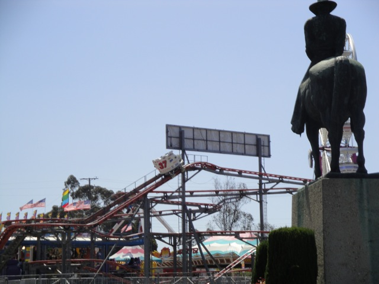
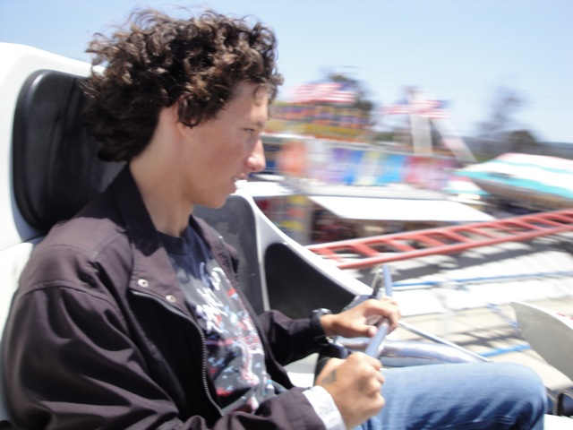
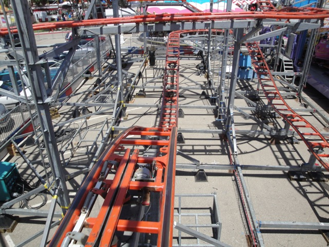
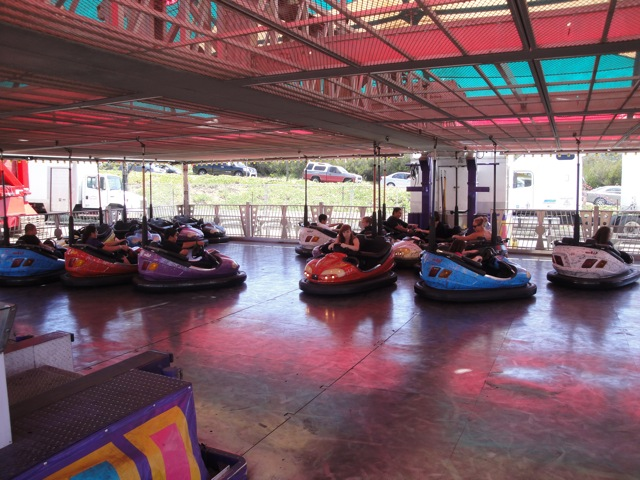
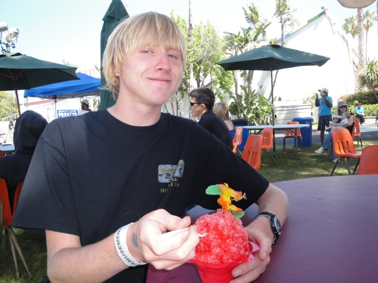

Santa Barbara Fair 2010
Ok. So this year, I will not be going to the Ventura County Fair because it collides with my big trip this summer. So to get my fair fix, Cody and I headed on up to the Santa Barbara Fair to check it out. We're very glad we did as we got to do something we wanted to do for a very long time.

That's right. Get some more rides on Pole Position.
Ok. That last statement was bullsh*t. What we were really looking foreward to was the Zipper.
Unfortunetly, Zipper was down and so we decided to try out Footloose.
Dude! Footloose was awesome!! It was one of the feet dangling models like the ones they have at Six Flags Discovory Kingdom and Kennywood. Which is awesome and much better than Kamakazie.
Starship 3000 was actually a lot better here than it was at the Ventura County Fair.
 The Zipper is open!!! Marathon time!!!
The Zipper is open!!! Marathon time!!!
 This ride kicks ass on so many different levels.
This ride kicks ass on so many different levels.
No caption is needed.
Ok. So aside from the Amazing Zipper and the cool Footloose, the Santa Barbara Fair has some pretty standard rides. Like these Chairswings.
Yawn. Can we go back on the Zipper?
 Speaking of yawn, look what we're about to ride.
Speaking of yawn, look what we're about to ride.
 *Ugh* Such valuable Zipper time being wasted on Pole Position.
*Ugh* Such valuable Zipper time being wasted on Pole Position.
 Cody, I don't think we're in Ventura anymore.
Cody, I don't think we're in Ventura anymore.

"HOLY SH*T!!! POLE POSITION WAS RUNNING FREAKING AMAZING TODAY!!!!!!"
 Now if you remember our last ride on Pole Position, you'll hear us talk about the ride being much better than normal. The whole ride was trimless.
Now if you remember our last ride on Pole Position, you'll hear us talk about the ride being much better than normal. The whole ride was trimless.

Even this drop was trimless!! It was really crazy!!!
 While Trimless Crazy Pole Position was fun and all, it's Tony Hawk next week that I'm really looking foreward to.
While Trimless Crazy Pole Position was fun and all, it's Tony Hawk next week that I'm really looking foreward to.
FYI, this is just an ordinary mirror. There is nothing fun houseish about it at all.
Unfortunetly, Cody was still feeling tired from our Zipper Marathon and needed some more boring rides to wake him up. So we went on the Ferris Wheel. (And yes, it's bigger than the Ventura Wheel.)
There's what the Santa Barbara Fair looks like.

Hey SFMM! I can legally bump people on these Bumper Cars. Maybe you should learn something about operating Bumper Cars from the Santa Barbara Fair. ;)
Looks like Windsurf came up from Ventura to give us a little visit in Santa Barbara.
Nope. This is a completely different Windsurf.
This Windsurf is like flyers. Only you can't snap them. =(

Meh. I can make a better snow cone with materials from Smart & Final.
Damn!! Right when Cody wakes up, the Zipper breaks down!!!
We tried to take a ride on Spin Out, but half way through the ride, it broke down on us. (Damn fair rides breaking.)
The good news is that Zipper has now reopened.
 Hey Butler Amusements!! The Ventura County Fair needs their Zipper back. So for 2011, please bring the Zipper back to the Ventura County Fair.
Hey Butler Amusements!! The Ventura County Fair needs their Zipper back. So for 2011, please bring the Zipper back to the Ventura County Fair.
Zipper Goodness.
 If you thought Avatar the movie had special effects, you'll be blown away by Avatar the dark ride at the Santa Barbara Fair. This ride makes the movie look like sh*t. It ranks up with Zombie as one of the greatest dark rides in the history of dark rides.
If you thought Avatar the movie had special effects, you'll be blown away by Avatar the dark ride at the Santa Barbara Fair. This ride makes the movie look like sh*t. It ranks up with Zombie as one of the greatest dark rides in the history of dark rides.
This is a scrambler. We rode it. We had fun. What more do you need to know?
Up nest, we checked out Fireball.
 It was basically just Xtreme under a different name.
It was basically just Xtreme under a different name.
And just like Xtreme, Fireball is a great Frisbee.
Afterwards, we decided to take another ride on Spin Out since it broke on us last time.
Insert random caption about Spin Out being upsidedown.
We went and saw Surf Asylum because they are a good band.
Tonight's fair food will consist of a Bacon Hot Dog, which was actually quite good.
This is the best ride to eat after eating a Bacon Hot Dogs.
Hard Rock was running quite well today.
The Santa Barbara Fair had great lights. Their Ferris Wheel light up like the Mickey Wheel!! Why can't your ferris wheel do that Ventura County Fair?
And how else do you end a day like this other than marathoning the best flat ride ever.
Home